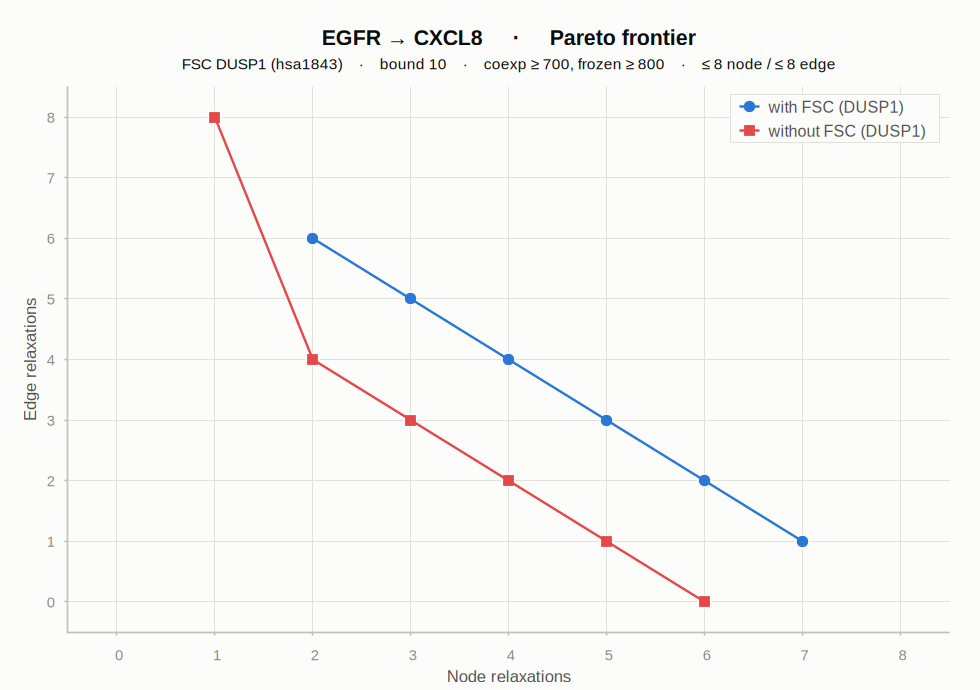

Each experiment tests one candidate node (FSC) on the EGFR → CXCL8 explanation over the merged KEGG graph, comparing the minimal-relaxation frontier with the node forced active (with FSC) against the node avoided (without FSC). Every Pareto point links to an interactive subgraph showing exactly which nodes and edges were relaxed. Node & edge relaxations are the assumptions the model had to drop to make the explanation consistent — fewer is better.

FSC JUN hsa3725
Excluding JUN raises the cost by +1 node across the whole frontier — JUN is a natural participant (a direct AP-1 activator of CXCL8/IL8).
-1 to exclude
FSC DUSP1 hsa1843
Forcing the MAPK phosphatase DUSP1 active costs +2 relaxations vs excluding it — antagonistic to the EGFR → CXCL8 explanation.
+2 to include
FSC FOSB hsa2354
The with- and without-FSC frontiers are identical — FOSB is compatible with the explanation but not required (no significance).
Δ 0